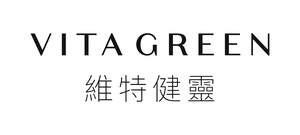

Trade Mark Journal No.2025/052 26 December 2025
UK00004290911 7 November 2025 (3,5,10,21,29,30,32,35)

- Class 3
- Non-medicated cosmetics and toiletry preparations; non-medicated dentifrices; perfumery; aromatic essential oils; bleaching preparations and other substances for laundry use; abrasive preparations for polishing; face mask; gel eye mask; facial mask; gel eye patches for cosmetic purposes; hair shampoos; hair conditioners; hair care creams and lotions; hair cleaning preparations; hair tonics; hair masks; hair moisturizing preparations; hair treatment oils; non-medicated hair restoration lotions; hair spray; hair dyes; foot masks for skin care; non-medicated foot care preparations; liquid soaps used in foot baths; non-medicated footbath preparations.
- Class 5
- Pharmaceutical preparations for medical purposes and pharmaceutical preparations for veterinary use; sanitary preparations for medical purposes; dietetic food and substances adapted for medical or veterinary use; food for babies; dietary supplements for human beings and animals; plasters, materials for dressings; material for stopping teeth, dental wax; disinfectants; preparations for destroying vermin; fungicides; herbicides; collagen for medical purposes; hair growth shampoo; hair growth stimulants; medicated hair care preparations; medicated hair treatment preparations; medicinal hair growth preparations; pharmaceutical preparations for preventing and treating hair loss; pharmaceutical preparations for the hair and scalp; appetite suppressant pills; decoctions for pharmaceutical purposes; dietary fiber; dietary supplements with a cosmetic effect; slimming pills; antioxidant pills; nutritional supplements; enzyme dietary supplements; herbal extracts, other than essential oils, for medical purposes; herbal teas for medicinal purposes; medical dressings; medicinal herbs; phytotherapy preparations for medical purposes; patches containing pharmaceutical preparations; medicated footbath preparations; foot care preparations for medical purposes; food supplement preparations in liquid or powdered form (not for medical purposes) (not included in other classes); food supplements (other than medicated, or predominantly of vitamins, minerals, collagen or trace elements) (not included in other classes); food supplements (other than medicated, or predominantly of vitamins, minerals, collagen or trace elements) in liquid form (not included in other classes); collagen food supplements not for medical purposes.
- Class 10
- Arterial blood pressure measuring apparatus; medical apparatus and instruments; apparatus for use in medical analysis; spirometers; medical apparatus; medical devices for hair loss treatment; medical apparatus for hair growth stimulation; hair and scalp massaging devices; medical devices with infrared lights for hair growth stimulation; bracelets for medical purposes; cholesterol meters; compression garments (not included in other classes); strait jackets (not included in other classes); cooling patches for medical purposes; diagnostic apparatus for medical purposes; diabetic monitoring apparatus; electric massage guns (not included in other classes); electrodes for medical use; heart rate monitoring apparatus; sanitary masks; pulse meters; orthopaedic bandages for joints; heating patches for medical purposes; disposable steam-heated patches for therapeutic purposes; therapeutic facial masks; electrotherapy apparatus for beauty treatment; lasers for beauty therapy; massage apparatus.
- Class 21
- Household or kitchen utensils and containers; cookware and tableware, except forks, knives and spoons; combs and sponges; brushes, except paintbrushes; brush-making materials; articles for cleaning purposes; unworked or semi-worked glass, except building glass; glassware, porcelain and earthenware; hair brushes; electric hair brushes; large-toothed combs for the hair, Cosmetic utensils.
- Class 29
- Meat, fish, poultry and game; meat extracts; preserved, frozen, dried and cooked fruits and vegetables; jellies, jams, compotes; eggs; milk, cheese, butter, yogurt and other milk products; oils and fats for food; powdered milk; powdered soya milk.
- Class 30
- Coffee, tea, cocoa and substitutes therefor; rice, pasta and noodles; tapioca and sago; flour and preparations made from cereals; bread, pastries and confectionery; chocolate; ice cream, sorbets and other edible ices; sugar, honey, treacle; yeast, baking-powder; salt, seasonings, spices, preserved herbs; vinegar, sauces and other condiments; ice (frozen water); beverages with coffee, cocoa, chocolate or tea base fortified with vitamins for non-medical purposes; health drinks (not for medical purposes), namely vitamin water, mineral water, aloe vera drink, vitamin energy recovery drink, turmeric shot drink, detox shot drink, gut health shot drink, energy boost shot drink.
- Class 32
- Beers; non-alcoholic beverages; mineral and aerated waters; fruit beverages and fruit juices; syrups for making non-alcoholic beverages and preparations for making non-alcoholic beverages; fruit drinks fortified with vitamins; preparations for making non-alcoholic beverages fortified with vitamins; health drinks, namely vitamin water, mineral water, aloe vera drink, vitamin energy recovery drink, turmeric shot drink, detox shot drink, gut health shot drink, energy boost shot drink.
- Class 35
- Promotional services; distribution of promotional leaflets; promotion services (held in social club) relating to health food supplements and health care related products; retail store services relating to health food and health care related products; wholesale services relating to health food and health care related products via distributorship; compilation of advertisements for use as web pages on the Internet; computer file management, providing information via a web site, web indexing for commercial or advertising purposes, providing web space for advertising for online business.
Vita Green Health Products Company Limited
Representative: Withers & Rogers LLP